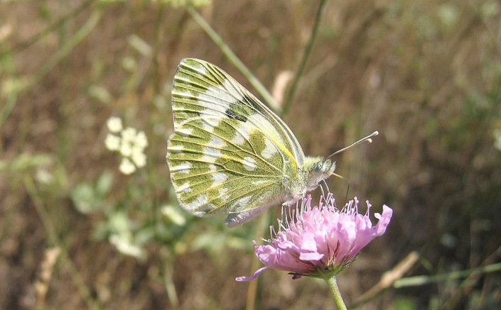
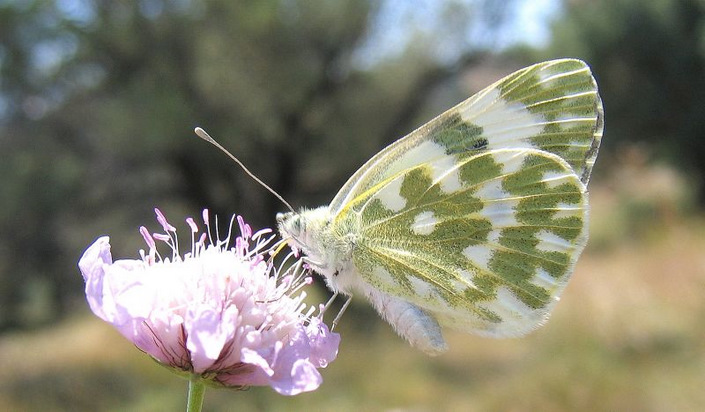
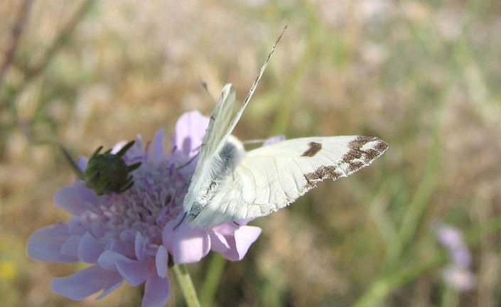
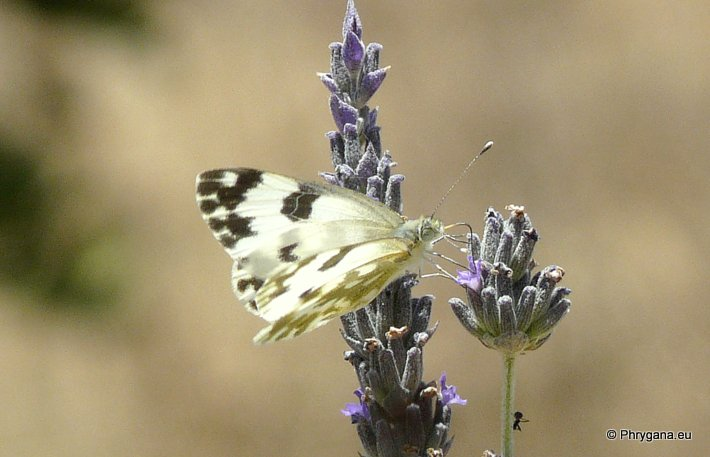
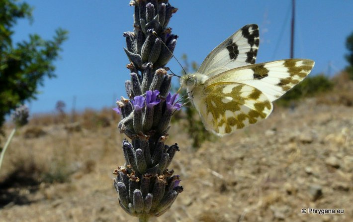

| PHRYGANA | Fauna | Flora | Galles | liste des espèces |
contact -
info - commentaires phrygana1 (at) gmail.com |
| Particularités crétoises | nouveautés | Mines | ressources naturelles |
| Pontia edusa (Fabricius 1777) |
| 49 | Fauna | PIERIDAE | Pierinae | Pontia |
 Pontia edusa Apodoulou 09 juin 2005 |
| (en) Eastern Bath White (fr) le Marbré de Fabricius (de) Reseda Falter | |
| Adulte: envergure de 38 à 46 mm. Couleur de fond blanche avec les apex marqués de noir. Dessous des ailes postérieures largement envahies de vert jaunâtre plus ou moins foncé. | |
| Chenille trouvée entre fin avril et octobre. Oeufs pondus isolément. L'incubation dure environ une semaine. | |
| La chenille est oligophage: diverses Brassicaceae et Resedaceae. | |
| Espèce plurivoltine: 4 à 5 générations annuelles avec des périodes de vol en février mars avril mai juin juillet août septembre octobre. | |
| Statut en Crète: indigène | |
| Biotopes en Crète: phrygana, champs cultivés, bords des chemins, vieilles olivaies, terrains vagues. | |
| Altitudes: 0 - 1000 m. | |
| Distribution: Europe centrale et méridionale, Moyen-Orient, Iran | |
|
 Pontia edusa Apodoulou 09 juin 2005 |
|
 Pontia edusa Apodoulou 09 juin 2005 |
|
 Pontia edusa Agios Giorgos (Melambes) 30 juin 2013 |
|
 Pontia edusa Agios Giorgos (Melambes) 30 juin 2013 |
| 20 juillet 2013 |
| © paul fontaine -- © Phrygana.eu 2007 -- 2013 |